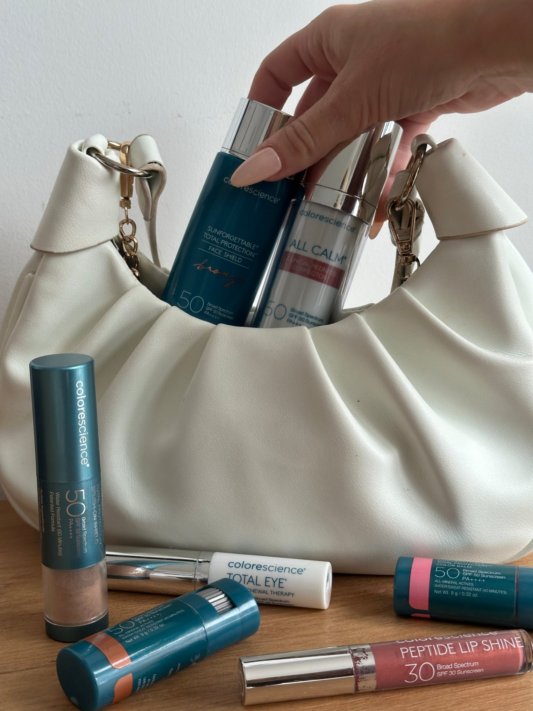

Aesthetics
Hyperhidrosis Treatment With Isabelle Joseph, DNP, NP-BC
Sweat Less. Worry About It Less.
Choosing clothes based on whether they'll show sweat. Keeping an extra shirt nearby. Avoiding handshakes because your palms are damp. Worrying about sweating through an important meeting, event, or everyday activity.
For people living with excessive sweating, these small decisions can become a regular part of life.
Hyperhidrosis is more than simply “sweating a lot.” It's a condition in which the body produces more sweat than is necessary for temperature regulation—and treatment options are available.
Isabelle Joseph, DNP, NP-BC provides personalized hyperhidrosis treatment using targeted neurotoxin injections designed to temporarily reduce excessive sweating. And with concierge care, treatment comes to you.

Overview
What Is Hyperhidrosis?
Sweating is normal. It's one of the ways your body regulates temperature. Hyperhidrosis is different.
People with hyperhidrosis experience excessive sweating that goes beyond what the body needs for normal temperature regulation. It may occur even when you aren't exercising, aren't overheated, or don't have an obvious reason to be sweating.
For some people, excessive sweating is an inconvenience. For others, it can affect clothing choices, work, social situations, exercise, confidence, and everyday comfort.
If excessive sweating has become something you constantly think about or plan around, it's worth having a conversation about your options.
Who It May Be For
Where Can Excessive Sweating Occur?
Underarms
Excessive underarm sweating can soak through clothing regardless of temperature or activity level. Treatment can help temporarily reduce sweat production in the targeted area.
Palms
Excessively sweaty hands can affect everything from holding objects and using electronics to writing, working, and shaking someone's hand. Targeted treatment may help reduce sweat production in the palms.
Soles of the Feet
Excessive sweating of the feet can contribute to persistent dampness and discomfort inside socks and shoes. For appropriate patients, targeted neurotoxin treatment may help reduce excessive sweating in the soles of the feet.
How Does Hyperhidrosis Treatment Work?
The Same Type of Medication. A Different Goal.
You may already be familiar with neurotoxins such as Botox, Dysport, or Xeomin because of their use in aesthetic treatments. For hyperhidrosis, neurotoxin is used differently.
Rather than targeting muscles responsible for facial expression, small amounts of medication are strategically injected into the treatment area to temporarily block the chemical signals that activate sweat glands. When those signals are reduced, the treated sweat glands produce less sweat.
The treatment is localized, meaning it targets excessive sweating in the specific area being treated rather than preventing your body from sweating everywhere.
This Isn't About Never Sweating Again
It's About Reducing Excessive Sweating.
Sweating serves an important purpose. The goal of hyperhidrosis treatment isn't to prevent your body from regulating its temperature or eliminate normal sweating throughout your body.
Instead, treatment targets sweat glands within a specific problem area. Your body can continue regulating temperature and producing sweat in untreated areas.
The goal is simply to reduce the excessive sweating that's interfering with your everyday life.

Isabelle's Approach to Hyperhidrosis
Treat the Concern, Not Just the Symptom on a Checklist.
Excessive sweating can be uncomfortable to talk about. It can also be frustrating when you've tried stronger antiperspirants, changed your clothes, adjusted your routine, or simply learned to live around the problem.
Isabelle approaches hyperhidrosis the same way she approaches all of her care: by starting with you.
She'll ask about what you're experiencing, where the sweating occurs, how long it has been happening, how it affects your daily life, and relevant aspects of your medical history. That conversation helps determine whether neurotoxin treatment may be appropriate or whether your symptoms should be evaluated further.
No embarrassment. No judgment. Just a straightforward conversation about what's happening and what options may be available.
What to Expect
What to Expect From Hyperhidrosis Treatment
- Step 1
Consultation + Assessment
Your appointment begins with a conversation about your symptoms. Isabelle will review the areas affected, your health history, medications, previous treatments, and other relevant factors before determining whether treatment is appropriate.
- Step 2
Identify the Treatment Area
The area of excessive sweating will be evaluated so treatment can be appropriately planned. The number and placement of injections depend on the area being treated and your individual needs.
- Step 3
Treatment
Small amounts of neurotoxin are injected at multiple points throughout the treatment area. Because areas such as the palms and soles can be more sensitive than the underarms, the treatment experience may differ depending on the location. Isabelle will discuss what you can expect before treatment begins.
- Step 4
Results Develop
The reduction in sweating develops after treatment rather than occurring immediately. As the neurotoxin begins blocking the signals responsible for activating the treated sweat glands, patients may notice a significant reduction in sweating in the targeted area. Results are temporary and may last for several months. Individual results and treatment duration vary.

Concierge Hyperhidrosis Treatment
Private Care in a Comfortable Setting
For something as personal as excessive sweating, receiving care in your own environment can make the experience feel much easier.
Isabelle provides concierge treatment in your home, office, or another appropriate location. You receive one-on-one care without a traditional waiting room and without having to fit another clinic visit into an already busy day.
Isabelle is based in South Easton, Massachusetts and serves South Easton and select surrounding communities, including Norwell, Randolph, Somerset, Stoughton, and Westwood.
Is It Right for Me?
Is Hyperhidrosis Treatment Right for Me?
Neurotoxin treatment may be worth exploring if excessive sweating is persistent, bothersome, or interfering with your daily activities.
You may want to talk with Isabelle if you experience:
- Excessive underarm sweating
- Excessively sweaty palms
- Excessive sweating of the feet
- Sweating that occurs even when you aren't hot or exercising
- Sweat that frequently soaks through clothing
- Sweating that affects work, social activities, or confidence
- Symptoms that haven't responded adequately to your current approach
Not all excessive sweating is primary hyperhidrosis. In some cases, increased sweating can be associated with medications, hormonal changes, medical conditions, or other underlying factors. That's one reason an appropriate medical assessment matters.
Isabelle can review your symptoms and health history and determine whether treatment is appropriate or whether additional evaluation may be needed.
What to Know
Before Your Hyperhidrosis Appointment
Before treatment, make sure Isabelle knows about:
- Your current medications and supplements
- Medical conditions
- Allergies
- Previous neurotoxin treatments
- Previous reactions or complications from injectable treatments
- Neuromuscular conditions
- Skin irritation, infection, or wounds in the treatment area
- Pregnancy or breastfeeding
- Any recent changes in your health
- When the excessive sweating began and whether it has changed over time
Do not stop prescribed medications unless instructed to do so by the clinician who prescribed them.
Isabelle will provide any additional pre-treatment instructions specific to your treatment area.
After Hyperhidrosis Treatment
Recovery recommendations can vary depending on the treatment area. You may experience temporary redness, tenderness, swelling, bruising, or discomfort at injection sites.
Follow the individualized post-treatment instructions provided by Isabelle and Skin Clique. If you have questions or experience unexpected symptoms following treatment, contact your medical provider for guidance.
Frequently Asked Questions
Hyperhidrosis Frequently Asked Questions
Have a question you don't see here? Bring it to your consultation, or browse the full FAQ page.
How do I know if I sweat “too much”?
There isn't a single amount of sweat that defines every patient's experience. One important question is whether sweating seems excessive for the situation and whether it regularly interferes with your comfort or daily activities. If you're constantly planning around sweat, changing clothing because of it, or avoiding situations because of it, it's reasonable to discuss your symptoms with a medical provider.
Is hyperhidrosis just caused by anxiety?
No. Stress or anxiety can trigger sweating, but hyperhidrosis can occur even without those triggers. Some patients experience excessive sweating during ordinary daily activities or even while resting. Because increased sweating can have different causes, your individual symptoms should be evaluated rather than automatically attributed to anxiety.
How does Tox stop sweating?
Neurotoxin temporarily blocks the chemical signals that tell the targeted sweat glands to produce sweat. By interrupting those signals in the treated area, sweat production can be significantly reduced.
Will I stop sweating everywhere?
No. Treatment is targeted to specific areas. Your body continues to sweat from untreated areas and retains its ability to regulate temperature.
Which areas can Isabelle treat?
Skin Clique offers hyperhidrosis treatment for excessive sweating involving the underarms, palms, and soles of the feet. Isabelle can determine whether your specific area of concern is appropriate for treatment.
Does hyperhidrosis treatment hurt?
Treatment involves multiple small injections throughout the affected area. Discomfort varies depending on the individual and treatment location. The palms and soles can be particularly sensitive, so discuss any concerns about discomfort with Isabelle before treatment.
When will I notice less sweating?
Results develop gradually following treatment rather than immediately. Your individual response may vary, and Isabelle can discuss what to expect based on the area being treated.
How long does hyperhidrosis treatment last?
The effects are temporary but may last for several months. Treatment duration varies from person to person, and repeat treatment may be appropriate once the effects begin to wear off.
Is there downtime?
Many patients can return to normal activities relatively quickly, although recommendations can vary depending on the area treated. Follow Isabelle's specific aftercare instructions.
Will I sweat more somewhere else?
Neurotoxin treatment targets the sweat glands within the treated area rather than redirecting sweat to another part of the body. Your untreated sweat glands continue to function normally.
Is hyperhidrosis treatment the same as cosmetic Tox?
The medication may be the same type of neurotoxin used for aesthetic Tox, but the treatment goal, injection pattern, location, and dosing are different. Cosmetic Tox targets specific muscles to reduce movement associated with expression lines. Hyperhidrosis treatment targets the nerve signals responsible for activating sweat glands.
Can I receive treatment while pregnant or breastfeeding?
Neurotoxin treatment is generally not recommended during pregnancy or breastfeeding. Tell Isabelle if you are pregnant, breastfeeding, planning a pregnancy, or if your health status has changed before treatment.
When Is It Worth Asking for Help?
Everyone sweats. Exercise, heat, stress, and certain situations can naturally increase perspiration.
Hyperhidrosis becomes different when sweating is excessive compared with what the body needs and begins interfering with daily life. You don't need to wait until the problem feels “severe enough” to ask about it.
If sweating is bothering you, that's enough reason to start the conversation.
What If Something Else Is Causing My Sweating?
Excessive sweating can sometimes occur secondary to another medical issue or medication.
If your sweating began suddenly, occurs primarily at night, affects your entire body, or is accompanied by other unexplained symptoms, additional medical evaluation may be appropriate.
Hyperhidrosis treatment should begin with understanding what you're experiencing—not simply treating the sweat. Isabelle can help determine the appropriate next step based on your individual history and symptoms.
You Don't Have to Plan Your Life Around Sweat
If excessive sweating has become part of how you choose clothes, approach work, interact socially, exercise, or move through everyday life, it's worth learning about your options.
Start with a conversation. Isabelle can help determine whether hyperhidrosis treatment may be appropriate for you and answer your questions about what to expect.
Ready to Sweat Less?
Experience personalized, concierge hyperhidrosis care with Isabelle Joseph, DNP, NP-BC.